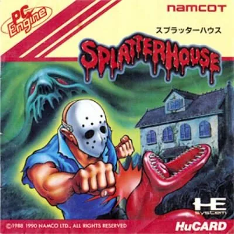

PC Engine
Splatterhouse
- Año: 1990
- Desarrollador: Namco
- Género: Beat 'em up / Acción
- Jugadores: 1 jugador
Esta conversión de la recreativa Splatterhouse es el segundo juego de la saga (tras Splatterhouse: Wanpaku Graffiti para NES), que después continuó en Mega Drive.
Rick y su novia Jennifer entran en la mansión West (conocida como Splatterhouse) para estudiar las enseñanzas de parapsicología del Dr. West para un trabajo de clase. Tras un relámpago y un grito, Jennifer desaparece y Rick se queda con la Máscara del Terror puesta, que da una gran fuerza a quien la lleva.
Rick debe sobrevivir a siete niveles empapados de sangre, llenos de cadáveres, demonios y otras criaturas inquietantes, en este beat 'em up arcade de desplazamiento lateral. Por la casa hay varias armas a su disposición, como un cuchillo de carnicero, un tablón y una escopeta. Si Rick quiere encontrar a Jennifer con vida, tiene que darse prisa por los pisos de la mansión... porque un reencuentro feliz no siempre está garantizado.
Controles
que Rick se mueva con el joystick (abajo: agacharse y coger armas del suelo; arriba: coger las de la pared). Según StrategyWiki (recreativa): un botón golpea (agachado: patada) y otro salta; falta saber cuál es cada uno (probar B y A). ¿Va fluido?
Mando de PC Engine: dos botones.
| Panel | Juego |
|---|---|
 | II |
 | I |
 | Run |
 | Select |
+  | Salir del juego |
El panel en PC Engine


Argumento
Recopilado de internet (2026-11-04). Lo marcado con ⚠️ no está probado en la bartop.
Dos estudiantes, Rick Taylor y Jennifer Willis, se refugian de una tormenta en la mansión West, la «Splatterhouse», donde se rumorea que el desaparecido Dr. West hacía experimentos horribles. Al entrar, la puerta se cierra y Jennifer grita.
Rick despierta en una mazmorra, resucitado por la Máscara del Terror, un objeto maya de sacrificios que piensa por sí mismo. La máscara se le funde con el cuerpo y lo convierte en un monstruo con fuerza sobrehumana. Rick encuentra a Jennifer rodeada de criaturas, pero ella se transforma en monstruo y él tiene que matarla; antes de morir, vuelve a ser ella y le da las gracias.
Final: Rick descubre que la mansión está viva y destruye su «útero», que la hace arder. Al salir, la máscara revive a un monstruo gigante, Hell Chaos, en una tumba; al vencerlo, la máscara se rompe y Rick vuelve a ser normal. En esta versión, el final solo enseña la máscara explotando y la mansión ardiendo durante los créditos.
Jugabilidad
Recopilado de internet (2026-11-04). Lo marcado con ⚠️ no está probado en la bartop.
- Beat 'em up de lado con plataformas, versión para PC Engine (1990) de la recreativa de Namco (1988), de terror inspirado en Viernes 13, Posesión infernal, Poltergeist y Lovecraft.
- Rick salta, da puñetazos y patadas (agachado, patada baja), ataca en el aire y hace una patada deslizándose. Coge armas del suelo y de las paredes.
- Caminos alternativos: algunas zonas se pueden pasar cayendo por agujeros o subiendo por escaleras.
- Diferencias de esta versión (la americana): menos sangre, la máscara es roja (para no parecerse a Jason), en la fase 1 y 2 el cuchillo de carnicero es un palo, y el jefe de la fase 4 Evil Cross se cambió por una cabeza azul gigante, Evil Sleep.
Botones según las guías (⚠️ por confirmar)
| Recreativa | Panel | Acción |
|---|---|---|
| Joystick |  | Moverse · abajo: agacharse y coger armas del suelo · arriba: coger las de la pared |
| Botón de ataque | ⚠️ | Dar un puñetazo (agachado: patada) y usar las armas |
| Botón de salto | ⚠️ | Saltar |
- ⚠️ Son los de la recreativa: falta saber cuál es cada uno en PC Engine (probar B y A).
Fuentes
Guía de niveles
Recopilado de internet (2026-11-04). Lo marcado con ⚠️ no está probado en la bartop.
| Fase | Jefe |
|---|---|
| I | Body Eaters |
| II | Poltergeist |
| III | Biggy Man |
| IV | Evil Cross (en la versión americana, ⚠️ Evil Sleep) |
| V | Jennifer mutante |
| VI | Mother (el útero de la mansión) |
| VII | Hell Chaos |
- Nombres de los jefes: los de los capítulos del vídeo.
Objetos
Recopilado de internet (2026-11-04). Lo marcado con ⚠️ no está probado en la bartop.
| Objeto | Qué hace |
|---|---|
| Palo (en esta versión, en vez del cuchillo) | Arma de las primeras fases |
| Escopeta | Arma de fuego |
| Cuchillo de carnicero dorado | El arma del jefe de la fase 4 en esta versión |
Trucos y secretos
Recopilado de internet (2026-11-04). Lo marcado con ⚠️ no está probado en la bartop.
- Caminos alternativos cayendo por agujeros o subiendo escaleras.
- ⚠️ No he encontrado trucos.
Fuentes
Longplay

Partida completa de la versión PC Engine (31 min), de RetroTina: Splatterhouse - TurboGrafx-16 Longplay.
Pulsa el minuto de un nivel para ver el vídeo desde ese punto.
Fases
| Fase | Fases |
|---|---|
| Fase I | |
| Fase II | |
| Fase III | |
| Fase IV | |
| Fase V | |
| Fase VI | |
| Fase VII | |
| Otros momentos |